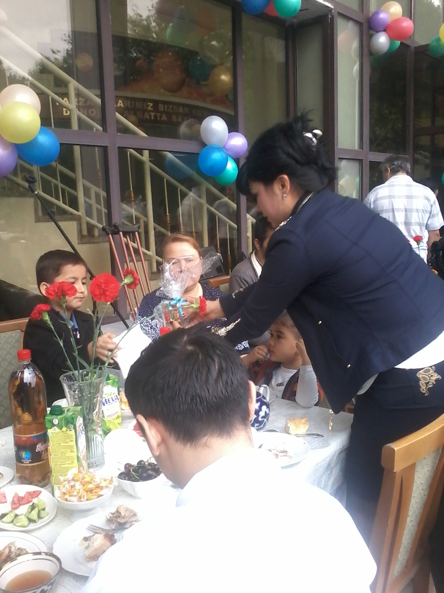
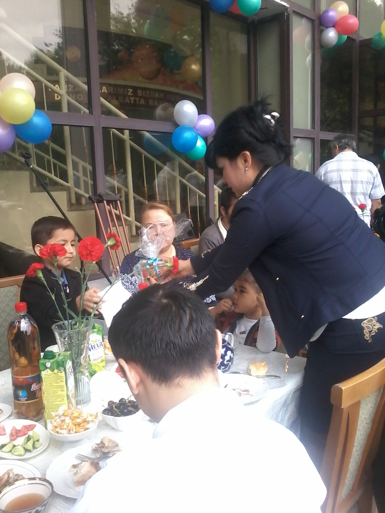

Biz haqimizda

Toshkent shahar Planetariysi — 2003-yilda tashkil etilgan bo‘lib, yoshlar va tashrif buyuruvchilarda astronomiyaga qiziqishni oshirishga xizmat qiladi...
Har yili minglab o‘quvchilar, talabalar va xorijiy mehmonlar tashrif buyurishadi...
Bizda mavjud bo‘limlar

Mirzo Ulug‘bek eksponatlari
Ilmiy asboblar, maketlar va interaktiv darslar

Mirzo Ulug‘bek rasadxonasi
Qadimiy astronomiya asboblari reproduksiyasi

Fazogirlar burchagi
Kosmik kiyimlar, raketalar va haqiqiy fazogirlar buyumlari

Al-Farg‘oniy va Ulug‘bek zali
Buyuk o‘zbek olimlari hayoti va kashfiyotlari

Kosmos burchagi
Interaktiv kosmik stansiya va sayyoralar maketlari

Yulduzli osmon
Burjlar, yulduz turkumlari va teleskop kuzatuvlari
Namoyish etilayotgan filmlar

Tabiatshunoslik
Uzoq yulduzlar sayohati
27 min • 6+
Somon Yo‘li Markaziga Sayohat
Qora tuynuk sirlari
7 min • 6+
Ikkita Kichik Oynacha
Teleskop tarixi
25 min • 12+
Yorug‘lik
Optika va yorug‘lik ifloslanishi
7 min • 6+
Koinot Qa’rida
Kashfiyotlar tarixi
32 min • 6+
Qoramtir Materiya
Koinotning 95% sirlari
20 min • 16+Vazirlik va Boshqarma


Chet ellik mehmonlar


Tashrif buyuruvchilar


Xayriya va boshqa tadbirlar


 



Xalqaro munosabatlar


Axl Jamoa


Mijozlar fikri
Ajoyib!
“Bolalar hayajonlanib ketishdi!” – Dilnoza
Stunning!
“Best planetarium in Central Asia” – Alex, USA
Tavsiya qilaman
“Har oy kelamiz” – Farhod